I want to predict Weight of fish based on subset of predictors.
library(tidyverse)
library(tidymodels)fish_data <- read_csv("/Users/rashawnhoward/Downloads/Fish.csv")
fish_data %>% glimpse() ## Rows: 159
## Columns: 7
## $ Species <chr> "Bream", "Bream", "Bream", "Bream", "Bream", "Bream", "Bream"…
## $ Weight <dbl> 242, 290, 340, 363, 430, 450, 500, 390, 450, 500, 475, 500, 5…
## $ Length1 <dbl> 23.2, 24.0, 23.9, 26.3, 26.5, 26.8, 26.8, 27.6, 27.6, 28.5, 2…
## $ Length2 <dbl> 25.4, 26.3, 26.5, 29.0, 29.0, 29.7, 29.7, 30.0, 30.0, 30.7, 3…
## $ Length3 <dbl> 30.0, 31.2, 31.1, 33.5, 34.0, 34.7, 34.5, 35.0, 35.1, 36.2, 3…
## $ Height <dbl> 11.5200, 12.4800, 12.3778, 12.7300, 12.4440, 13.6024, 14.1795…
## $ Width <dbl> 4.0200, 4.3056, 4.6961, 4.4555, 5.1340, 4.9274, 5.2785, 4.690…There are 6 potential predictors one of which is a chr variable
There are no missing values
fish_data %>%
summarise_all(~sum(is.na(.)))## # A tibble: 1 x 7
## Species Weight Length1 Length2 Length3 Height Width
## <int> <int> <int> <int> <int> <int> <int>
## 1 0 0 0 0 0 0 0The distribution of weight is right skewed and seems to have a value of zero for one of the weights. We need to remove this value, and transform data before modeling. We can also see some bigger fish with weight pass 1000 grams. I wonder which fish these are? And whats the biggest fish on average?
fish_data %>%
ggplot(aes(Weight)) +
geom_histogram(fill ="black")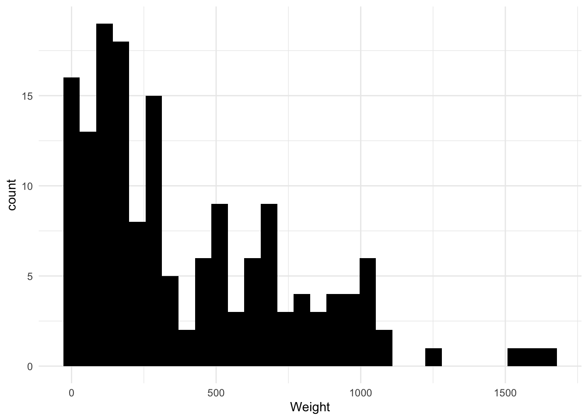
fish_data %>%
filter(Weight > 0) -> fish_data # Remove the zero weight value
We can see the biggest fish in this dataset by weight is Pike followed by Perch. While the biggest fish on average is Pike followed by bream, whitefish, then perch… This dataset has mostly Perch, the least amount being whitefish. From the boxplots we can see Pike, Perch, and Whitefish vary a lot in weight, while Roach, Parkki, and smelt don’t vary much in weight.
fish_data %>%
group_by(Species) %>%
filter(Weight > 1000) %>%
ggplot(aes(Height,Weight,color=Species)) +
geom_point() +
ggtitle("Whats The Biggest Fish In our Dataset?")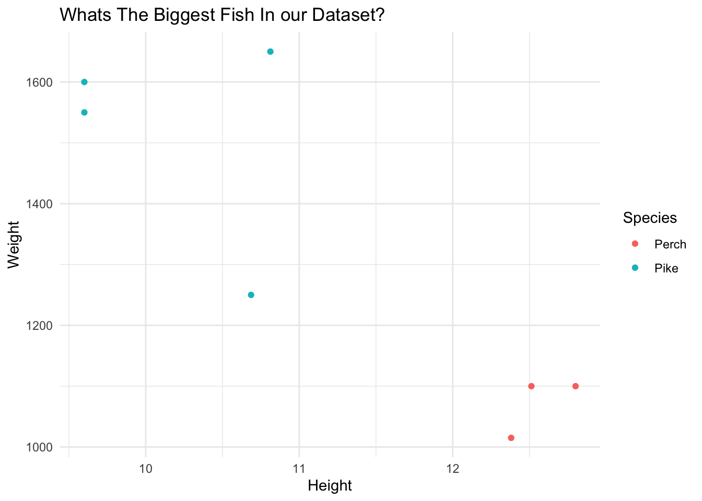
fish_data %>%
group_by(Species) %>%
summarise(Avg = mean(Weight)) %>%
mutate(order = fct_reorder(Species,Avg)) %>%
ggplot(aes(order,Avg)) +
geom_bar(stat="identity",fill="blue") +
coord_flip() +
ggtitle("Whats The Biggest Fish on Average?") +
ylab("Expected Weight") +
xlab("") 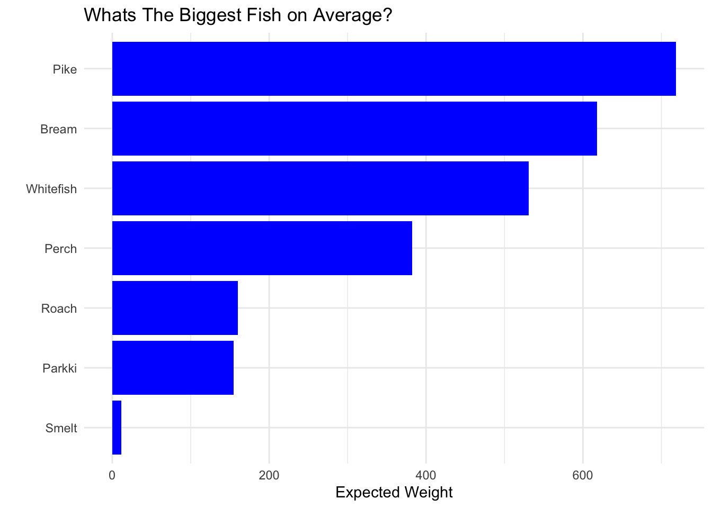
fish_data %>%
count(Species) %>%
mutate(order = fct_reorder(Species,n)) %>%
ggplot(aes(order,n))+
geom_bar(stat = "identity") +
coord_flip() +
ggtitle("Count of Species") +
xlab("")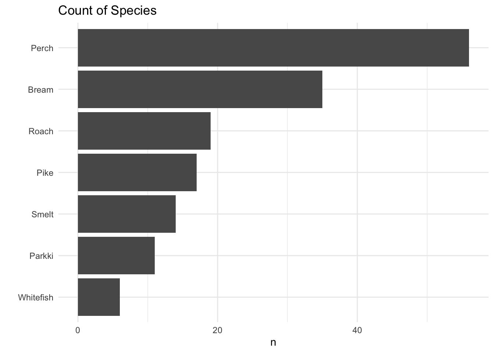
fish_data %>%
mutate(order = fct_reorder(Species,Weight)) %>%
ggplot(aes(order,Weight)) +
geom_boxplot() +
coord_flip() +
xlab("") +
ggtitle("Variation of Species Weight")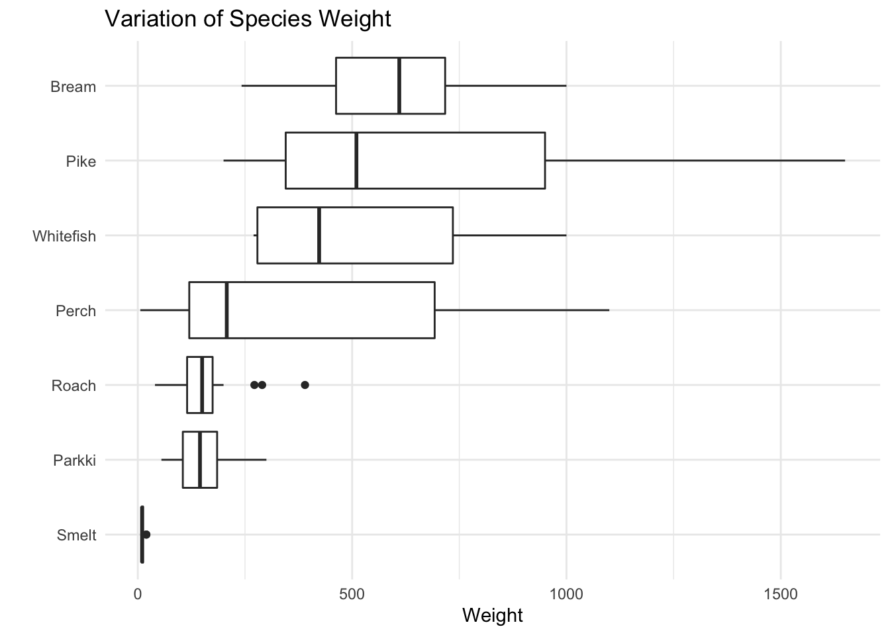
fish_data %>%
ggplot(aes(Weight,fill=Species)) +
geom_dotplot(alpha=0.5) +
scale_y_continuous(NULL, breaks = NULL) +
facet_wrap(~Species) +
ggtitle("Species by Weight")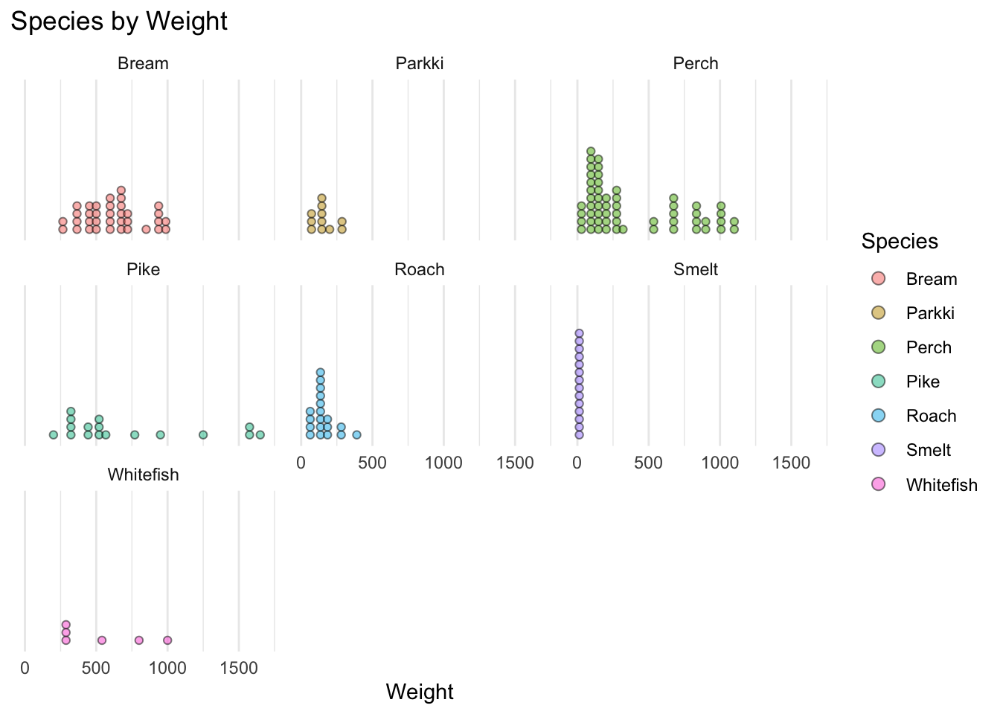
Their appears to be an exponential relationship between Weight and numeric predictors. As the predictors increase in value, weight increases exponentially. We Will have to transform data before modeling, to get a linear relationship or use a nonlinear model, such as natural splines.
fig1 <- fish_data %>%
ggplot(aes(Height,Weight)) +
geom_point()
fig2 <- fish_data %>%
ggplot(aes(Length1,Weight)) +
geom_point()
fig3 <- fish_data %>%
ggplot(aes(Length2,Weight)) +
geom_point()
fig4 <- fish_data %>%
ggplot(aes(Length3,Weight)) +
geom_point()
fig5 <- fish_data %>%
ggplot(aes(Width,Weight)) +
geom_point()
ggpubr::ggarrange(fig1,fig2,fig3,fig4,fig5,
labels = c("Weight Vs Height",
"Weight Vs Length1",
"Weight Vs Length2",
"Weight Vs Length3",
"Weight Vs Width"))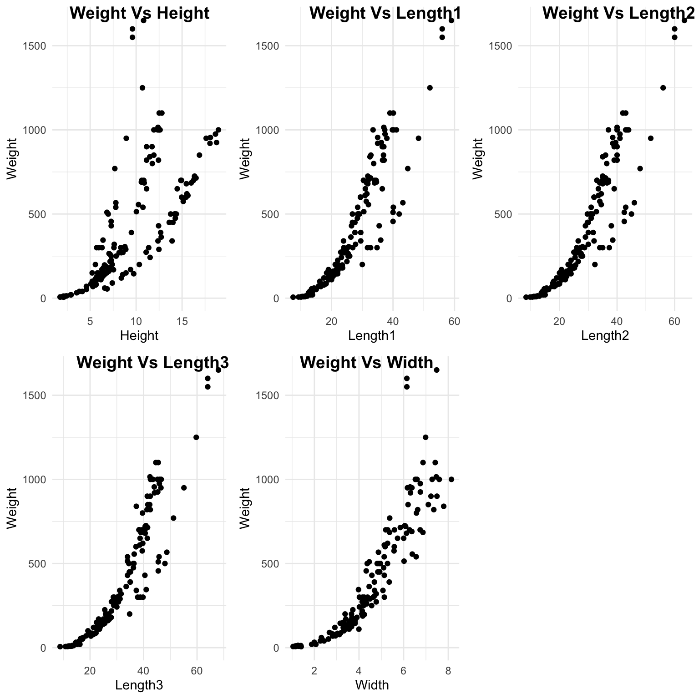
Their is a lot of correlation between the predictor variables. We will need to remove variables to avoid multicollinearity problems.
fish_data %>%
select(-Weight,-Species) %>%
GGally::ggpairs(progress = F)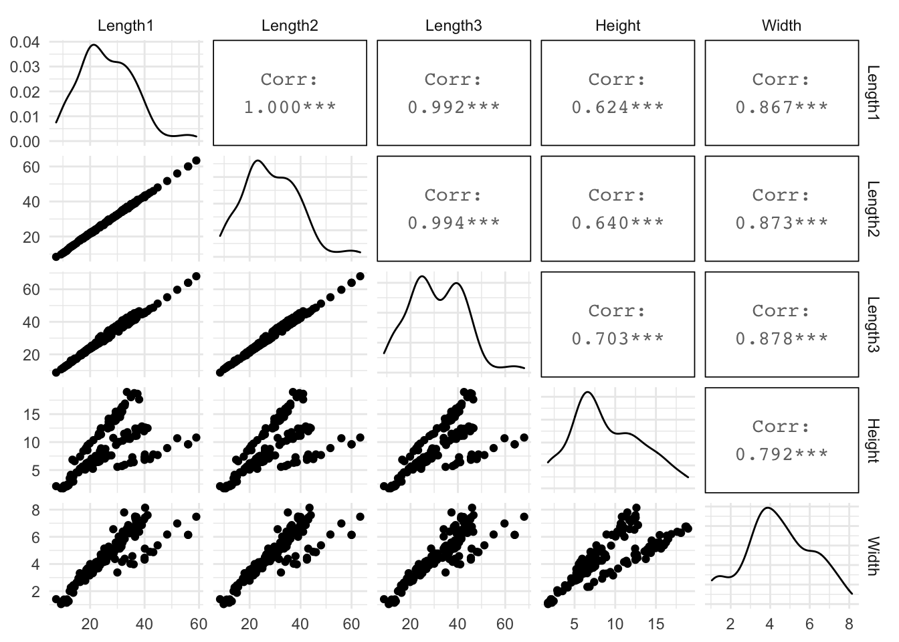
set.seed(123) # for reproducibility
split <- fish_data %>% initial_split(prop = .8) # 80/20 split of data 80% training, 20% testing
train <- training(split)
test <- testing(split)Here I create a design matrix, taking the log of numeric variables and creating dummy variables for the string variable.
# Create Design matrix
rec <- recipe(Weight~.,data=training(split)) %>%
step_log(all_outcomes(),all_predictors(),-all_nominal()) %>%
step_dummy(Species) %>%
prep()
rec## Data Recipe
##
## Inputs:
##
## role #variables
## outcome 1
## predictor 6
##
## Training data contained 127 data points and no missing data.
##
## Operations:
##
## Log transformation on Weight, Length1, Length2, Length3, ... [trained]
## Dummy variables from Species [trained]Here I fit the model Weight~Height+Species, since all predictors are heavily correlated, I excluded them except for height. NOTE: I could do stepAIC or some other selection method to see which predictor would be best in the model.
lm_mod <- linear_reg() %>%
set_engine("lm") %>%
fit(Weight~.-Length1-Length2-Width-Length3,data=juice(rec))
lm_mod## parsnip model object
##
## Fit time: 4ms
##
## Call:
## stats::lm(formula = Weight ~ . - Length1 - Length2 - Width -
## Length3, data = data)
##
## Coefficients:
## (Intercept) Height Species_Parkki Species_Perch
## -1.21044 2.79888 0.02999 1.10476
## Species_Pike Species_Roach Species_Smelt Species_Whitefish
## 1.92427 0.86067 1.42905 0.93099cooks distance show 3 potential outliers and normality issues at tails of qq plot. We have enough data to where the CLT could be used.
plot(lm_mod$fit,1:2)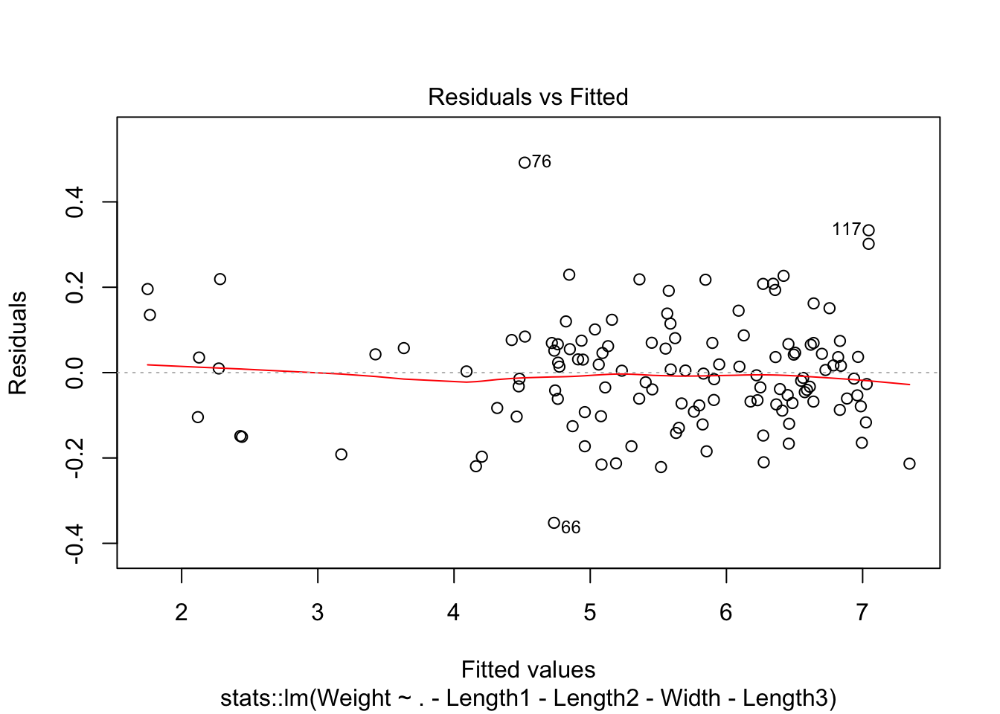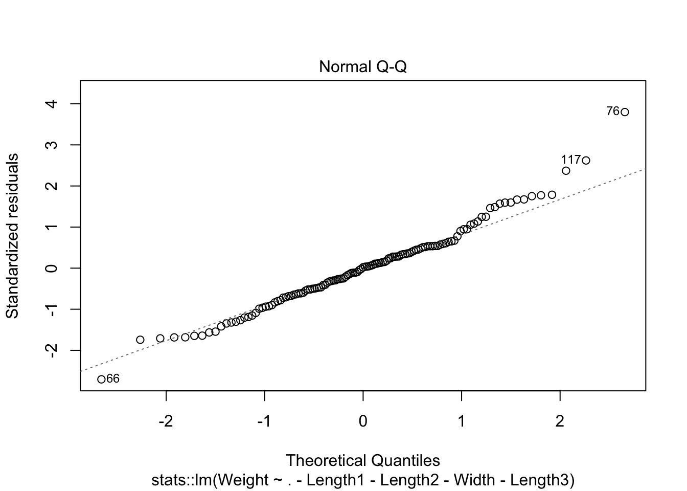
plot(lm_mod$fit,4)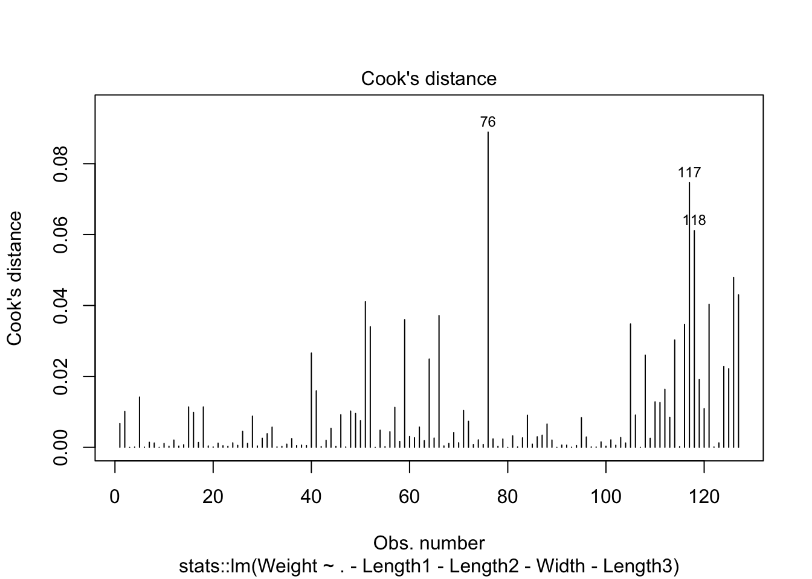
#ACF test
lm_mod$fit$residuals %>% acf()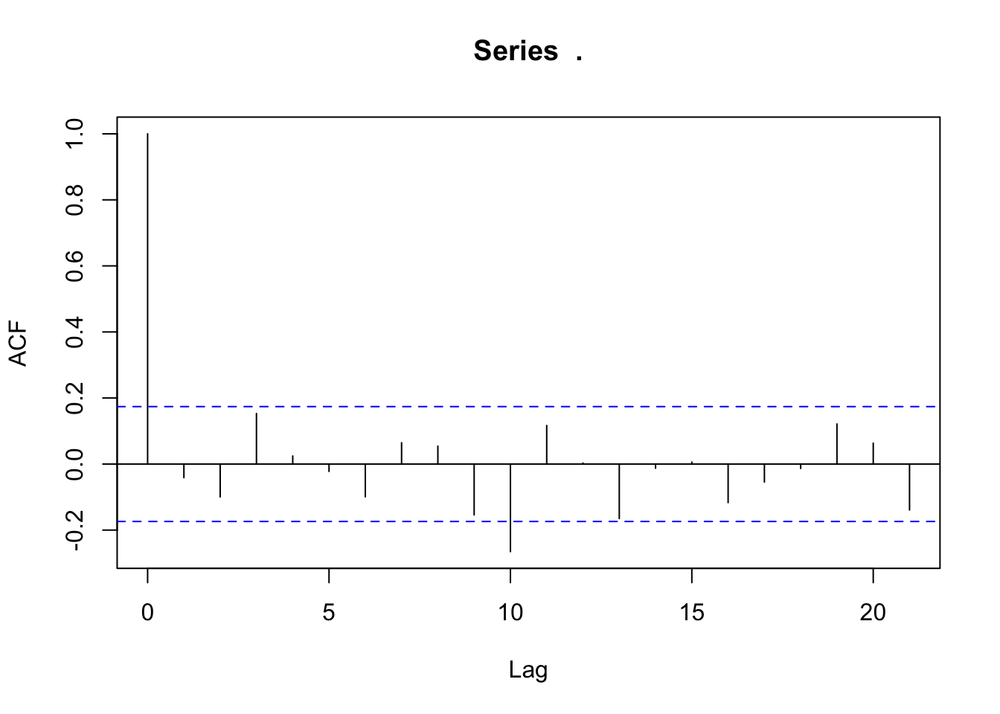
looks like removing row 76 and row 117 helped with the normality issue.
juice(rec) %>%
select(-Length1,-Length2,-Width,-Length3) -> rm_outlier_data
rm_outlier_data <- rm_outlier_data[-c(76,117),]
lm_mod2 <- linear_reg() %>%
set_engine("lm") %>%
fit(Weight~.,data=rm_outlier_data)
plot(lm_mod2$fit,1:2)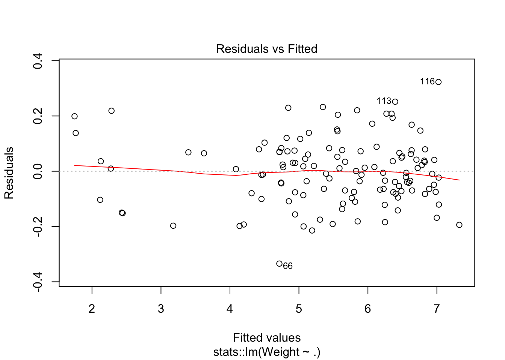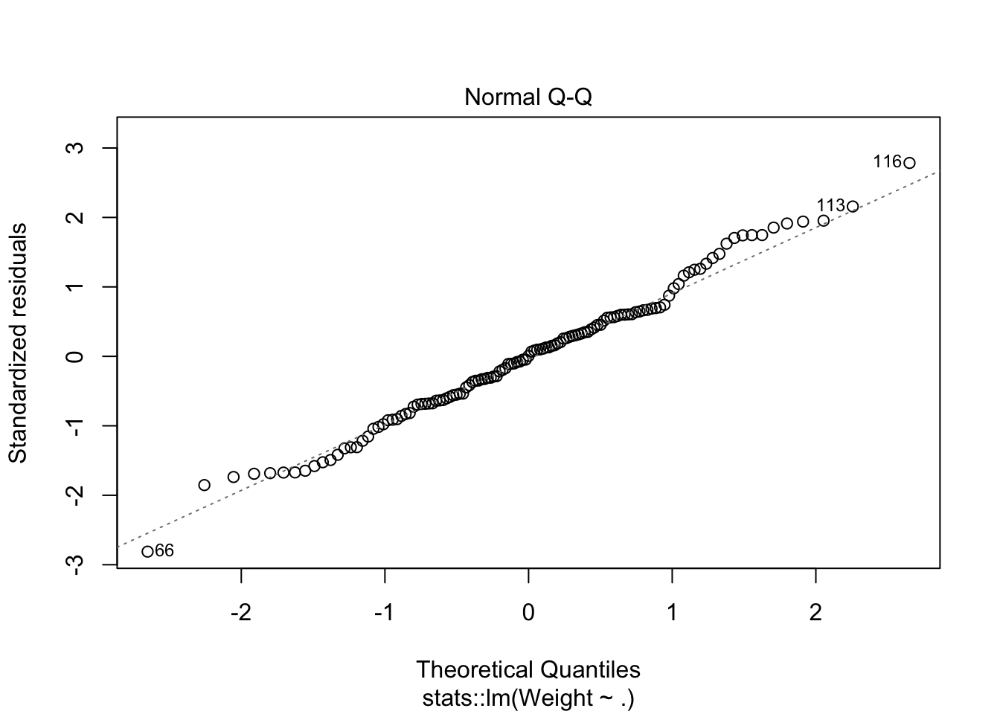
plot(lm_mod2$fit,4)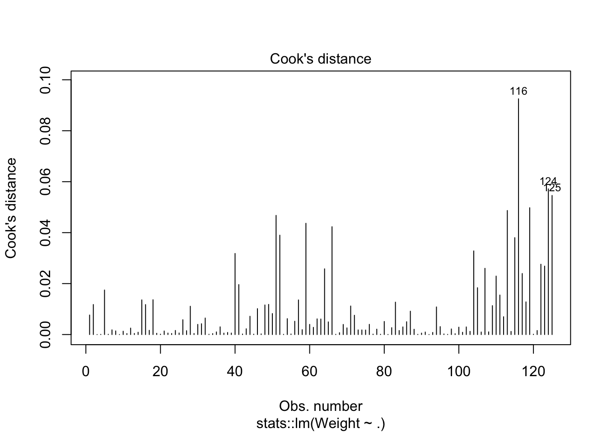
lm_mod2$fit$residuals %>% acf()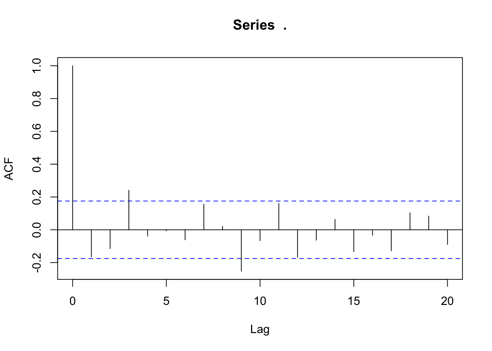
We get an MAE of 0.1193985 on the test data.
test <- bake(rec,new_data = test)
preds <- predict(lm_mod2,new_data = test) %>%
bind_cols(test)
min(preds$.pred);max(preds$.pred)## [1] 1.952602## [1] 7.357828preds %>%
mae(truth=Weight,estimate=.pred)## # A tibble: 1 x 3
## .metric .estimator .estimate
## <chr> <chr> <dbl>
## 1 mae standard 0.119After back-transforming data we get an MAE of 35.25854. This is now in the original units of our data and we can say, that on average, the forecast’s distance from the true value is 35.25854 (e.g true value is 200 and forecast is 164.74146 or true value is 200 and forecast is 235.25854).
preds %>%
select(.pred,Weight) %>%
mutate(.pred = exp(.pred),
Weight = exp(Weight)) %>%
mae(truth=Weight,estimate=.pred)## # A tibble: 1 x 3
## .metric .estimator .estimate
## <chr> <chr> <dbl>
## 1 mae standard 35.3We can see this visually with a lineplot
preds %>%
select(.pred,Weight,Height) %>%
ggplot(aes(Height,Weight,colour="Actual")) +
geom_line() +
geom_line((aes(Height,.pred,colour="Prediction"))) +
scale_colour_manual(" ",breaks = c("Actual","Prediction"),
values=c("blue","red")) +
ggtitle("Predictions vs Actual")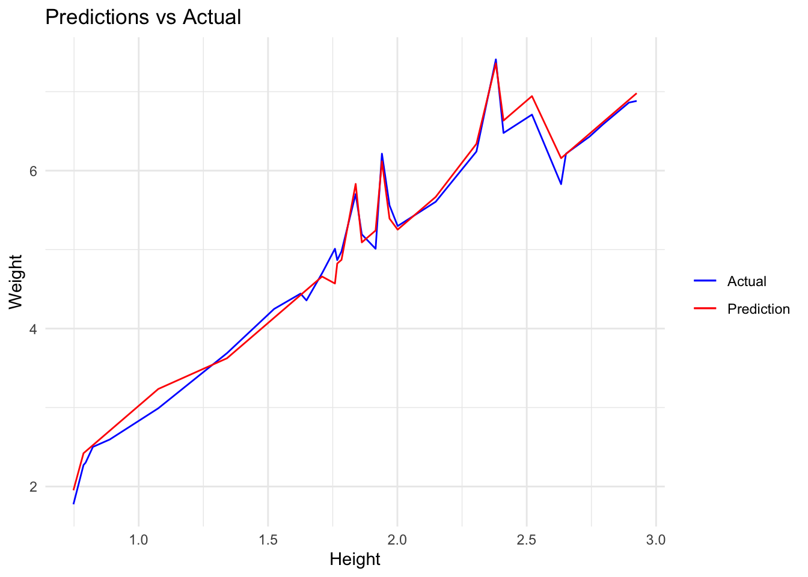